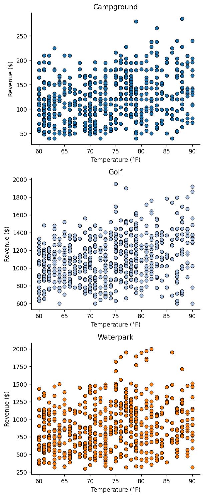
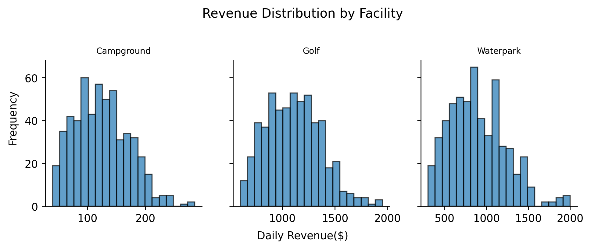
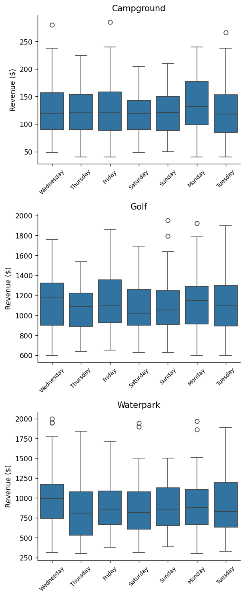

from pathlib import Path
import pandas as pd
import matplotlib.pyplot as plt
import seaborn as snsprocessed_data_path = Path("../data/processed")
weather = pd.read_csv(processed_data_path / "weather.csv", parse_dates=["date"])
parks_data = pd.read_csv(processed_data_path / "parks-data-long.csv", parse_dates=["date"])
df = (pd
.merge(parks_data, weather, on="date")
.loc[lambda x: x['variable'] == 'revenue']
.rename(columns={'value':'revenue'})
.drop(columns=['variable'])
.assign(facility=lambda x: x['facility'].str.title(),
month=lambda x: x['date'].dt.month_name(),
weekday=lambda x: x['date'].dt.day_name(),
year=lambda x: x['date'].dt.year,
)
)
df.head()| date | park_name | facility | revenue | temp_f | precip_in | month | weekday | year | |
|---|---|---|---|---|---|---|---|---|---|
| 2 | 2022-06-01 | Groveland Oaks | Campground | 108 | 75 | 0.42 | June | Wednesday | 2022 |
| 3 | 2022-06-01 | Addison Oaks | Campground | 80 | 75 | 0.42 | June | Wednesday | 2022 |
| 4 | 2022-06-01 | Springfield Oaks | Golf | 1184 | 75 | 0.42 | June | Wednesday | 2022 |
| 5 | 2022-06-01 | Glen Oaks | Golf | 1248 | 75 | 0.42 | June | Wednesday | 2022 |
| 8 | 2022-06-01 | Red Oaks | Waterpark | 402 | 75 | 0.42 | June | Wednesday | 2022 |
# Get unique facilities and prepare subplots
facilities = df['facility'].unique()
n_facilities = len(facilities)
fig, axs = plt.subplots(n_facilities, 1, figsize=(5, 4 * n_facilities), dpi=125)
cmap = plt.get_cmap('tab20')
# Check if axs is iterable (needed if only one subplot)
if n_facilities == 1:
axs = [axs]
# Plotting revenue vs temperature
for i, facility_type in enumerate(facilities):
ax = axs[i]
color = cmap(i)
subset = df[df['facility'] == facility_type]
ax.scatter(subset['temp_f'], subset['revenue'],
edgecolor='black', linewidth=0.75, color=color)
ax.set_title(facility_type)
ax.set_xlabel('Temperature (°F)')
ax.set_ylabel('Revenue ($)')
ax.spines['right'].set_visible(False)
ax.spines['top'].set_visible(False)
# Improve overall layout
fig.tight_layout()
plt.show()
fig, axs = plt.subplots(1, 3, figsize=(9, 3), dpi=250, sharey=True)
for i, facility in enumerate(df['facility'].unique()):
ax = axs[i]
subset = df[df['facility'] == facility]
ax.hist(subset['revenue'], bins=20, edgecolor='black',
alpha=0.7, label=facility)
ax.set_title(facility,fontsize=8)
ax.spines[['right', 'top']].set_visible(False)
fig.text(0.07, 0.5, 'Frequency', va='center', rotation='vertical')
fig.text(0.5, 0.001, 'Daily Revenue($)', ha='center', va='top')
fig.suptitle('Revenue Distribution by Facility', fontsize=12)
fig.subplots_adjust(top=0.75)
plt.show()
# Create boxplot for revenue for each day of the week and create a subplot for each facility
fig, axs = plt.subplots(n_facilities, 1, figsize=(5, 4 * n_facilities), dpi=125)
for i, facility in enumerate(facilities):
ax = axs[i]
sns.boxplot(data=df[df['facility'] == facility], x='weekday', y='revenue', ax=ax,)
ax.set_title(facility)
ax.set_xlabel('')
ax.set_ylabel('Revenue ($)')
ax.spines['right'].set_visible(False)
ax.spines['top'].set_visible(False)
ax.tick_params(axis='x', labelsize=8, labelrotation=45)
# rotate x-axis labels
fig.tight_layout()
plt.show()